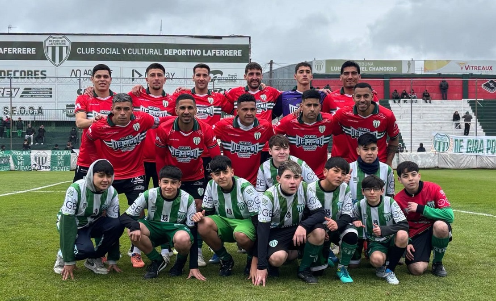

Con el empate del equipo en la ultima fecha en un partido muy tenso, Laferrere se vuelve a quedar, por segundo año consecutivo, fuera de los playoffs por el ascenso por diferencia de gol
un gol tempranero de CADU, hecho en el minuto once por Sombra nos ponia en una clara desventaja desde el principio del partido, durante los proximos minutos al equipo le costaba atacar, se notaba el peso de la localia.
por suerte el segundo tiempo fue un cambio de cara total para el equipo, que empezo con otra actitud la cual se fue recompensada con un gol al 47 de Denis, el partido termino con varios fallos arbitrales para ambos lados, Portillo ve la segunda amarilla al minuto 76 y Iribarne, de cadu, ve la roja directa al 80.
Pagina hecha por Blanco Vicente, Colombo Agustin y Gestro Bruno


© 2026 Club Social y Cultural Deportivo Laferrere. Todos los derechos reservados.